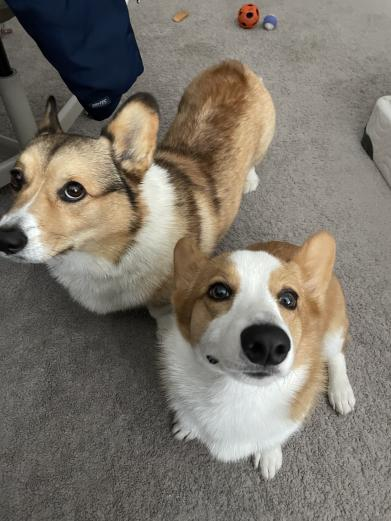
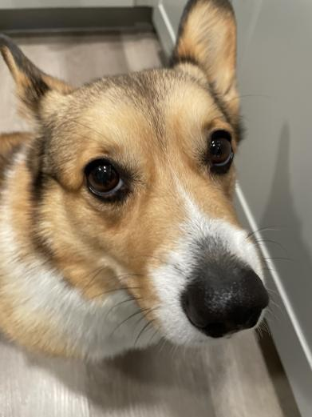
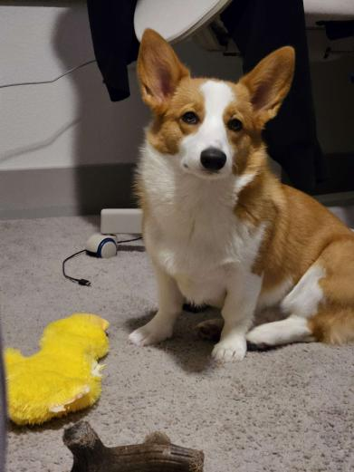
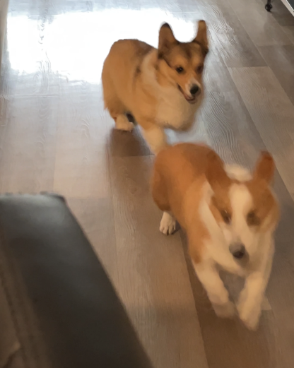

Some Random Information

Katsu and Kewpie are pembroke welsh corgis!

Katsu is the older than Kewpie by 6 years.

Kewpie is smaller than Katsu in size and age.

Katsu and Kewpie love to chase each other for fun!